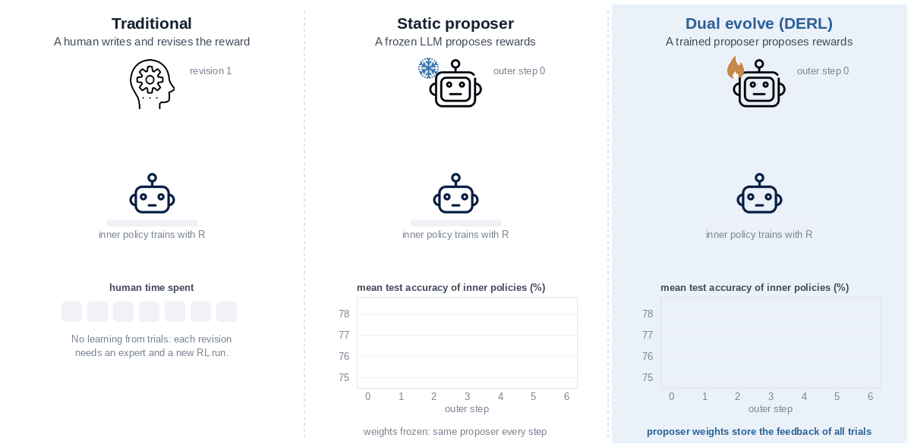
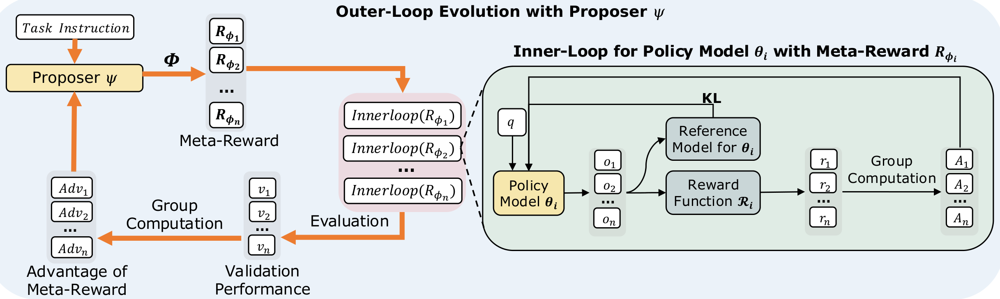

DERL: Dual-Evolving Reinforcement Learning
for Automated Reward Design
1University of Waterloo · 2The University of Hong Kong · 3The Chinese University of Hong Kong, Shenzhen · 4Duke University
Contact: sitao.cheng@uwaterloo.ca · tianleli@connect.hku.hk · xuhanhuang@link.cuhk.edu.cn
TL;DR Automated reward design usually searches with a proposer that never learns: a mutation operator or a frozen LLM. We propose to tune the proposer itself with its trials and their scores. A small proposer composes a reward from task primitives, an inner policy trains with that reward, and the inner policy's validation score updates the proposer by policy gradient.
Read the abstract
Crafting effective reward signals remains a central challenge in reinforcement learning (RL) for complex reasoning. Existing methods for automated reward optimization search with a fixed proposer which never learns from its costly trials. We present Dual-Evolving Reinforcement Learning (DERL), a dual-training framework for autonomous discovery of reward structures. An outer-loop proposer composes a reward from task primitives, and an inner policy trains with this reward. The proposer itself learns by policy gradient from the validation performance of the inner policy. Thus, DERL utilizes past-trial feedback to shape its reward-proposal distribution, an empirical meta-gradient of task success. We validate DERL on embodied (ALFWorld), scientific (ScienceWorld), and mathematical (GSM8K, MATH) reasoning. On multi-turn agent benchmarks, DERL outperforms strong baselines, significantly on out-of-distribution tasks. In mathematics, DERL improves on the outcome reward where directly added primitives hurt. Further analyses under matched compute show that our proposer effectively captures the meta-gradient to discover useful reward signals.
From hand-written rewards to a proposer that learns
Every framework repeats one costly trial: write a reward, train a policy with it, look at the result. They differ in who writes the next reward and where the result goes.

Human labor in every trial
An expert writes a dense reward or trains a reward model. Each revision needs the expert again, and hand-designed terms invite reward hacking.
Search without learning
Evolution or a prompted LLM writes and refines rewards. The proposer itself never changes, so a trial's outcome acts only through selection or the prompt.
The proposer evolves too
The proposer is trained by policy gradient on the validation score of the policies its rewards produce. Its weights keep the feedback of all past trials.
Two learners in two loops
An inner loop trains a policy with a proposed reward. An outer loop trains the proposer, with the validation performance of the inner policy as its reward. The two learners co-evolve.

Compose primitives
The proposer writes an arithmetic expression over executable primitives, such as task success, answer format, or the mean step score over one third of an agent trajectory. A logit mask keeps the output in this grammar.
Train an inner policy
Each program is a reward. An inner policy trains with it by GRPO on an inner-training split, and is then scored on a held-out validation split.
Update the proposer
The validation scores of one step are group-normalized and update the proposer by policy gradient. Nothing is differentiated through inner training.
Two variants. DERL-base starts every inner policy from the base model. DERL-full divides the training budget into rounds, and the best policy of each round starts the next one.
Fair evaluation. The search never sees the test set. After the search, a fresh policy trains on the full training set with the found reward, with the same data and no more epochs than the baselines, and is evaluated once.
Better rewards, largest gains on unseen tasks
Embodied and scientific agents
DERL-base beats every baseline at every level on ALFWorld and ScienceWorld, including RLVMR, which adds a hand-designed process reward. The uniform average of the same primitives helps on seen tasks but transfers poorly, while the found rewards more than double the outcome reward on out-of-distribution tasks.
| Method | ALFWorld | ScienceWorld | ||||
|---|---|---|---|---|---|---|
| L0 | L1 | L2 | L0 | L1 | L2 | |
| GRPO w/ Outcome | 76.6 | 71.1 | 29.7 | 21.1 | 13.7 | 10.9 |
| GRPO w/ Average(primitives) | 88.1 | 85.4 | 30.5 | 37.9 | 31.3 | 18.0 |
| GiGPO | 86.7 | 83.2 | 48.0 | 25.8 | 15.2 | 4.7 |
| RLVMR | 89.1 | 87.9 | 56.3 | 46.9 | 34.4 | 26.5 |
| DERL-base | 91.0 | 89.1 | 65.0 | 47.7 | 43.0 | 30.1 |
| DERL-full | 91.8 | 88.3 | 76.4 | 98.2 | 95.3 | 31.3 |
Mathematical reasoning
The outcome reward is already a reliable signal here. Adding format and averaged primitives directly raises GSM8K but lowers MATH by up to 4.2%. The rewards found by DERL avoid this trade-off and improve on the outcome reward in both training settings.
| Reward function | GSM8K | MATH |
|---|---|---|
| Trained on MATH | ||
| Outcome | 82.9 | 59.1 |
| Outcome + Format | 83.9 | 56.8 |
| Average(primitives) | 83.6 | 54.9 |
| DERL-base | 83.2 | 60.5 |
| DERL-full | 84.1 | 60.9 |
| Trained on MATH and GSM8K | ||
| Outcome | 82.6 | 58.8 |
| Outcome + Format | 86.4 | 55.9 |
| Average(primitives) | 86.5 | 55.8 |
| DERL-base | 87.0 | 60.2 |
| DERL-full | 87.6 | 60.2 |
The gain comes from training the proposer
Same reward space, same compute: only the trained proposer improves
A frozen proposer (random search) and prompted GPT-4o get the same reward space and number of inner runs. Their proposals do not improve over steps. The proposals of the 0.5B DERL proposer rise from 75.1% to 78.3%, and its final policy reaches 79.2%, against 77.2% for GPT-4o and 76.5% for random search.
Show the data
| Outer step | DERL-base | RLAIF | Random search |
|---|---|---|---|
| 0 | 75.13 | 76.88 | 76.08 |
| 1 | 76.60 | 76.67 | 74.90 |
| 2 | 77.69 | 76.40 | 75.97 |
| 3 | 77.13 | 76.85 | 54.58 |
| 4 | 77.29 | 76.45 | 76.34 |
| 5 | 78.28 | 76.17 | 75.16 |
| 6 | 78.30 | 76.95 | 74.83 |
Robust to removed or corrupted primitives
Removing one primitive costs at most 1.3%, and every reduced vocabulary still beats both GRPO baselines. When the format primitive is flipped to penalize correct formatting, the proposer learns a negative coefficient for it and recovers the useful direction.
Show the data
| Variant | Test exact match (%) |
|---|---|
| GRPO w/ Outcome | 75.82 |
| GRPO w/ Average(primitives) | 76.12 |
| DERL-base, flip g2 | 77.79 |
| DERL-base, remove g2 | 78.39 |
| DERL-base, remove g3 | 78.92 |
| DERL-base, remove g4 | 77.94 |
| DERL-base, full vocabulary | 79.22 |
Validation and test rise together
Over outer steps, the mean validation score of the inner policies, which is the proposer's reward, rises together with their test score on held-out data. The proposer does not overfit the validation split that supplies its reward.
ALFWorld (L2)
GSM8K
MATH
Show the data
| Step | Val. | Test |
|---|---|---|
| 0 | 51.9 | 30.5 |
| 1 | 72.2 | 41.7 |
| 2 | 64.8 | 41.2 |
| 3 | 72.9 | 45.0 |
| 4 | 73.4 | 45.3 |
| 5 | 75.0 | 45.0 |
| 6 | 70.7 | 40.7 |
| 7 | 83.3 | 44.5 |
| 8 | 86.4 | 54.5 |
| 9 | 54.6 | 34.0 |
| 10 | 73.4 | 43.2 |
| 11 | 85.7 | 51.8 |
| 12 | 85.2 | 54.9 |
| 13 | 68.2 | 43.4 |
| 14 | 86.9 | 51.7 |
| 15 | 86.2 | 55.1 |
| Step | Val. | Test |
|---|---|---|
| 0 | 67.8 | 59.5 |
| 1 | 83.0 | 73.5 |
| 2 | 96.6 | 86.2 |
| 3 | 96.6 | 86.0 |
| 4 | 96.4 | 86.4 |
| 5 | 96.8 | 86.2 |
| 6 | 96.8 | 86.4 |
| 7 | 96.5 | 86.2 |
| Step | Val. | Test |
|---|---|---|
| 0 | 48.2 | 39.6 |
| 1 | 59.6 | 48.9 |
| 2 | 68.9 | 57.2 |
| 3 | 68.4 | 56.5 |
| 4 | 67.8 | 56.3 |
| 5 | 68.5 | 56.5 |
| 6 | 69.2 | 57.0 |
| 7 | 70.2 | 59.0 |
The proposer learns stable reward structures
The proposer receives only a scalar score and no structural supervision. Over an ALFWorld L2 run, unstable programs (for example, ones that can penalize success) become rare, and bounded, linear or normalized structures become dominant.
Show the data
| Outer step | Stable (%) | Unstable (%) |
|---|---|---|
| 0 | 62.5 | 25.0 |
| 1 | 75.0 | 12.5 |
| 2 | 50.0 | 37.5 |
| 3 | 75.0 | 12.5 |
| 4 | 62.5 | 25.0 |
| 5 | 75.0 | 0.0 |
| 6 | 87.5 | 12.5 |
| 7 | 87.5 | 0.0 |
| 8 | 87.5 | 12.5 |
BibTeX
@article{cheng2026derl,
title = {Dual-Evolving Reinforcement Learning for Automated
Reward Design},
author = {Cheng, Sitao and Li, Tianle and Huang, Xuhan and
Yin, Xunjian and Zou, Difan},
journal = {arXiv preprint arXiv:2512.13399},
year = {2026}
}